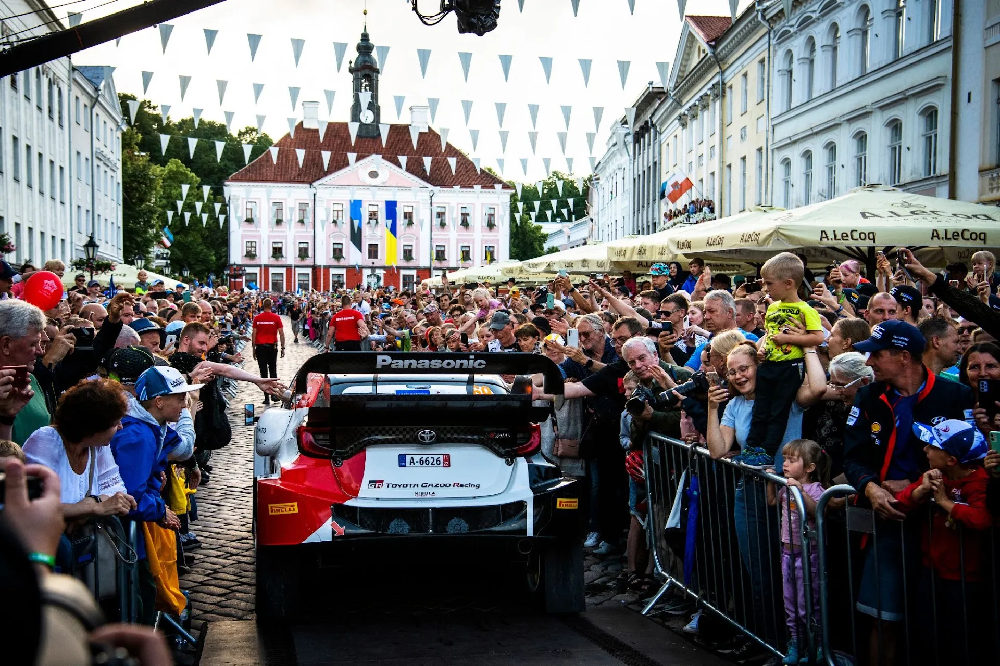
What could an international rally look like in the Baltics?
With the Central European Rally coming up this week, Estonia being axed from the 2024 calendar and Rally Latvia being on the calendar confirmed, got me thinking. What if both Estonia and Latvia could get spots in the calendar by combining forces for one rally in the Baltics? Like the Central European Rally, another cross-border event would be quite unique to the WRC. I think both Rally Estonia and Rally Latvia could benefit from this, with both sides getting more of the other’s fans.
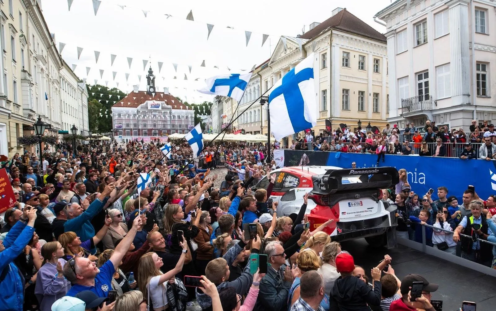
Kalle Rovanperä won the last WRC event in Estonia for the near future
I think the idea of having the host city of the rally being in 2 countries at once is an extremely cool idea and that’s exactly why I have chosen the hosts to be Valga/Valka. The area around the town(s) has remained largely unexplored by rallying, but I believe that some of the roads there are quite cool and are an untapped market so to say. Huge thanks to @iespraudins on Twitter for sparking this idea for me.
Enough waffle, let's get into the itinerary!
Thursday
Shakedown - Ķeizarpurvs - 3.2 km
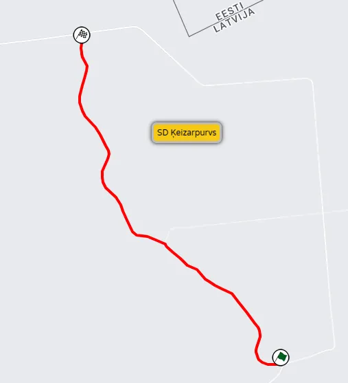
Map of the stage
We start the event on the Latvian side of the border, with a shakedown north of Valka. The shakedown utilises a wide and fast section of gravel on a road used mostly for forestry.
SSS1 - Valga/Valka - 2.2 km
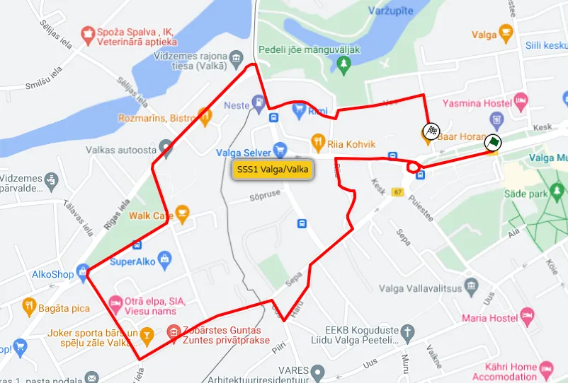
Map of the international stage using MapFab
To start off the rally proper, we go back across the border to the centre of Valga, starting on the main street, heading into a donut in front of the church. From there we continue on the main street but turn off to head down towards the singing stage behind the aforementioned church. We stay on small streets, going down Sepa street, hooking a left onto Haru street and finally a small section on Uus street before turning left across the border to Latvia. Staying on small streets before a 90 right onto a small straight. Soon we turn onto Rīgas street for a high-speed dash towards the border. We take a 90 right into Estonia and then turn left behind the Rimi. From there it’s a small relatively fast run to the finish to round off the Thursday running.
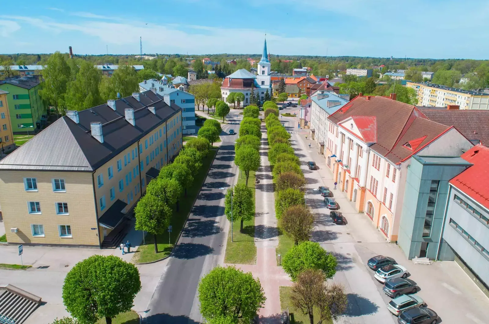
The main street of Valga, with the start of the stage pictured at the junction in the bottom left. (Image from visitvalgavalka.com)
Friday
SS2/SS5 – Tūja – 12.7 km
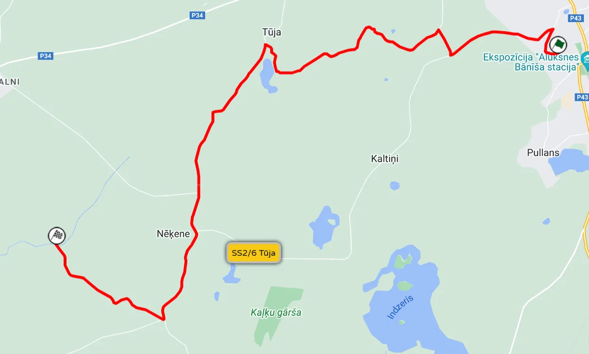
To start off Friday, we head to the town of Alūksne, to a stage last used this year in Rally Alūksne, but in the winter. The stage starts right outside of city limits, on a small sandy piece of road.
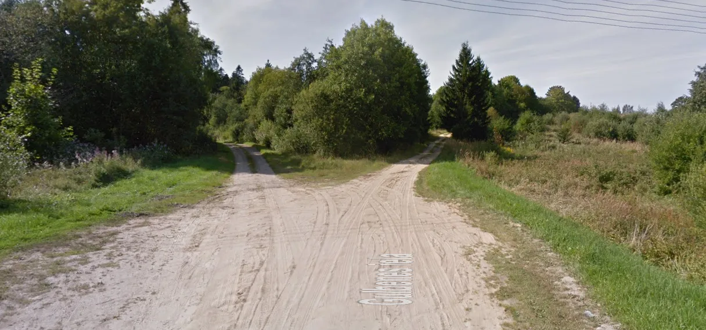
View from the start of the stage
The first 500 metres are on a narrow road between some trees. We then turn onto a wider, faster road until the 2.2 kilometre mark, where we take a 90 right that takes us towards the village of Tūja. In Tūja, we have a section similar to the one at the start of the stage. From there we get thrown onto an even wider road for the next 4 kilometres. A hairpin to the right takes us towards the end of the stage. The road gets a tad narrower here, but the speed stays relatively the same.
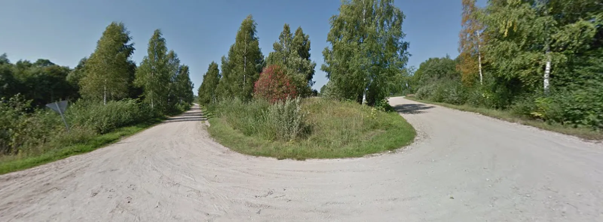
The aforementioned hairpin from Street View
SS2/SS5 – Žubes – 18.6 km
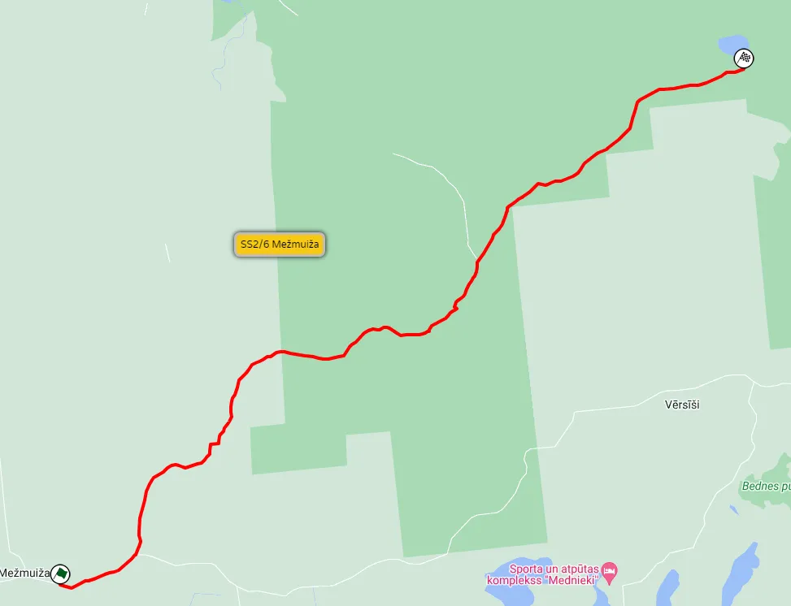
Map of the stage
The longest stage of the day and the joint longest stage of the rally comes in at 18.6 kilometres. A long, fast section of medium-wide gravel starts us off. Winding through forests and fields we end up at a hairpin to the left which takes us onto a narrower yet still absolutely flat out piece of road. A 90 left takes us onto a slightly wider road which leads us through the village of Žubes. From there the road gets narrower again for a bit and crosses a few trenches. For the last 2,6 kilometres the road gets wider again.
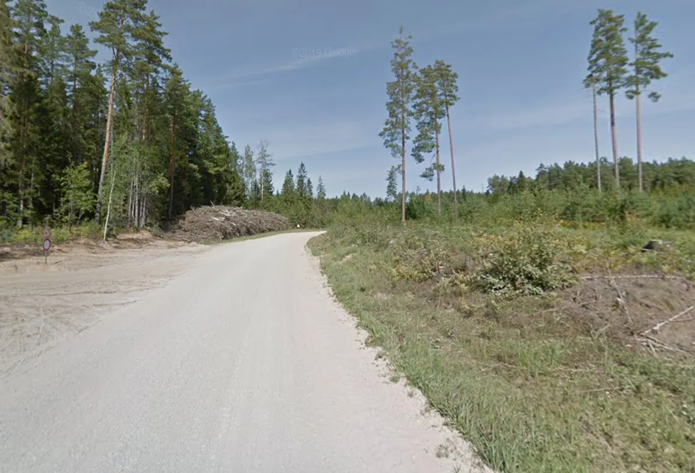
A view of the stage 4.6km in
SS4/SS8 – Mežmuiža – 12.3 km
Map of the stage
The stage starts in the small village of Mežmuiža, going eastward towards the border. The road is a semi-wide, yet still high-speed stage. We once again, like on the shakedown, use forestry roads of different sizes to make up the stage. About halfway through, there is a spectator zone where the crews have to navigate a chicane.
SS5/SS9 – Zīle – 11.8 km
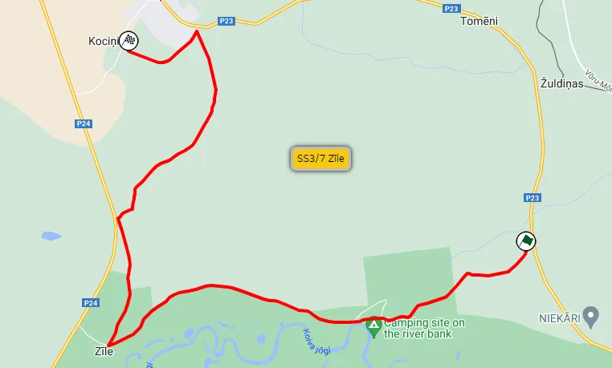
A bit of a change of pace from the last one, we start on a very narrow piece of road, going past the scenic river Gauja at high speed.
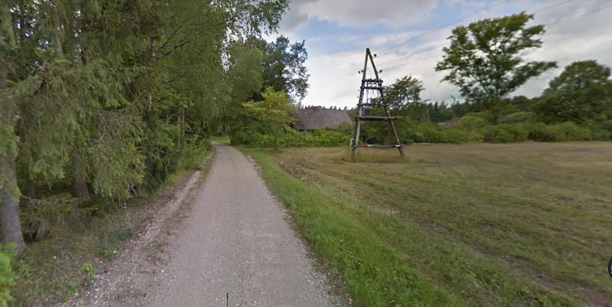
A picture of the stage 1,5 km in
- The stage continues on this narrow stretch of road until the 5.9 kilometre mark, where it turns right, through the village the stage is named after, Zīle. The road doesn’t get any wider here though! A kilometre before the finish, the stage once again gets narrower until the end.
End of Leg 1
Total Leg Distance: 116.2 km
Saturday, Start of Leg 2
SS10/SS14 - Plaani – 18.6 km
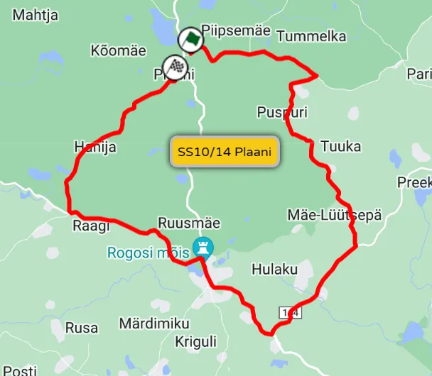
Map of the stage
We go east, towards Võru, to use some Lõuna-Eesti Ralli roads for Saturday. This stage is a combination of a few stages used in that rally, like Ruusmäe and Plaani. We start off from the small village of Plaani, on a wide road for the first 2.6km. From there we take a 90 right onto a similar road for the next 8 kilometres. The road winds up and down in classic Lõuna-Eesti Ralli fashion until another 90 right onto a wider road which takes us to the village of Ruusmäe for a short tarmac section past the beautiful manor.
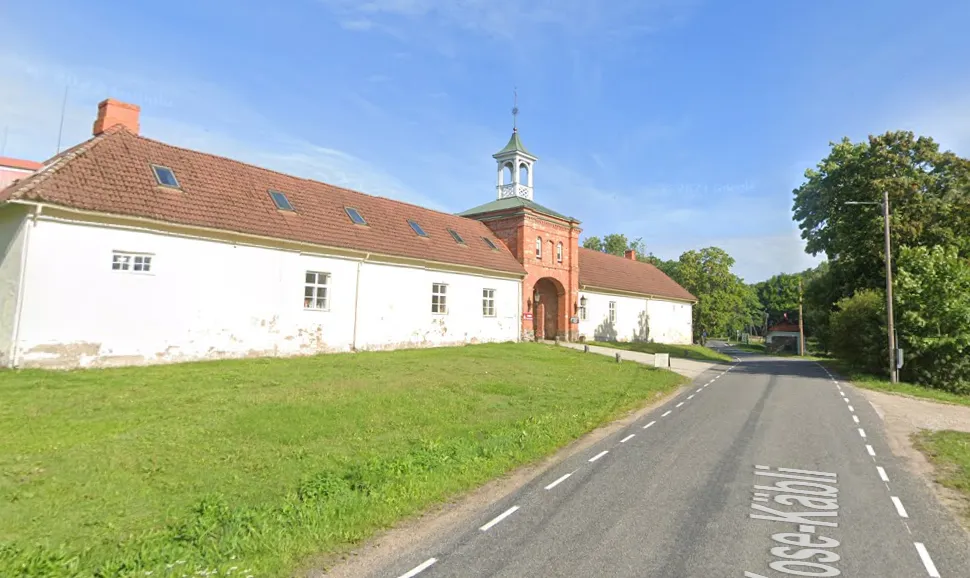
The manor at 11.6 kilometres in
Leaving Ruusmäe behind, we join onto the shakedown stage for this year's Lõuna-Eesti Ralli, which includes the famous Raagi junction and a massive jump a few kilometres from the end.
Onboard of the last 6.2km:
SS11/SS15 - Haanja – 14.7 km
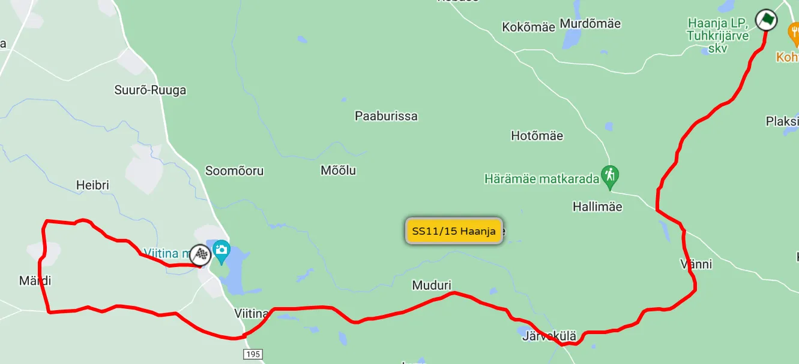
I just couldn’t leave out my home stage. Using roads last used in 2020 for most of the stage and 2015 for the last few kilometres, this wouldn’t be the first time top-class WRC cars went flat out on these roads. We start from the village of Haanja for this stage, using a relatively narrow road for the first 2.6 kilometres.
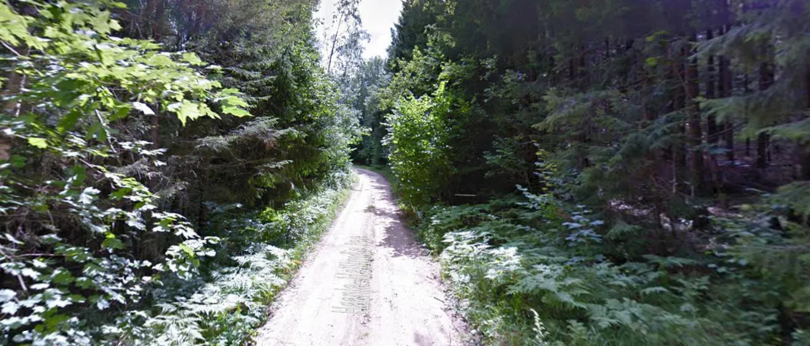
View from the narrow first road
A 90 left takes us on to a wide road for a small while, before turning right onto a slightly tighter road again. This road will take us to the village of Viitina, where there is a chicane on a tarmac road before we return to the loose stuff. The stage takes us on a slight detour before returning to Viitina for the end.
An onboard of most of the stage:
SS12/SS16 - Rimmi – 9.5 km
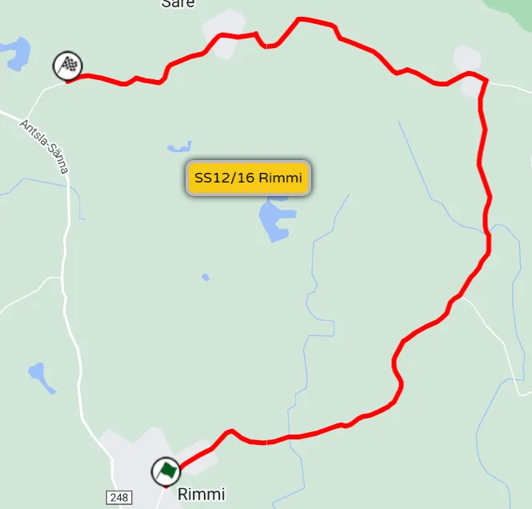
We head back towards Valga for the second half of this loop, to a stage last used in this configuration in 2012 as a part of Rally Estonia. The stage is a classic Rally Estonia-esque road, with the stage going up and down in terms of elevation and winding its way through forests and fields.
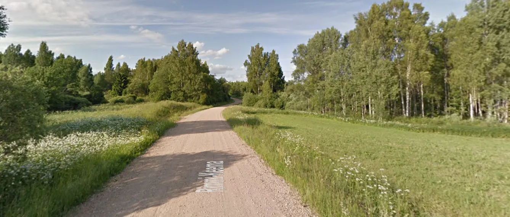
Onboard of the stage:
SS13/SS17 - Karula – 14.0 km
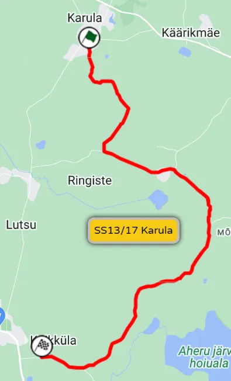
We’ve reached the end of the loop! This stage takes us onto roads that haven’t been used in 11 years (Rally Estonia in 2012 used the same direction, but a different layout). A pretty narrow road takes us for three kilometres until a junction where we turn left. The road stays about the same width, but gets a tad faster. 6.8 kilometres in, the road gets wider until the end in Koikküla.
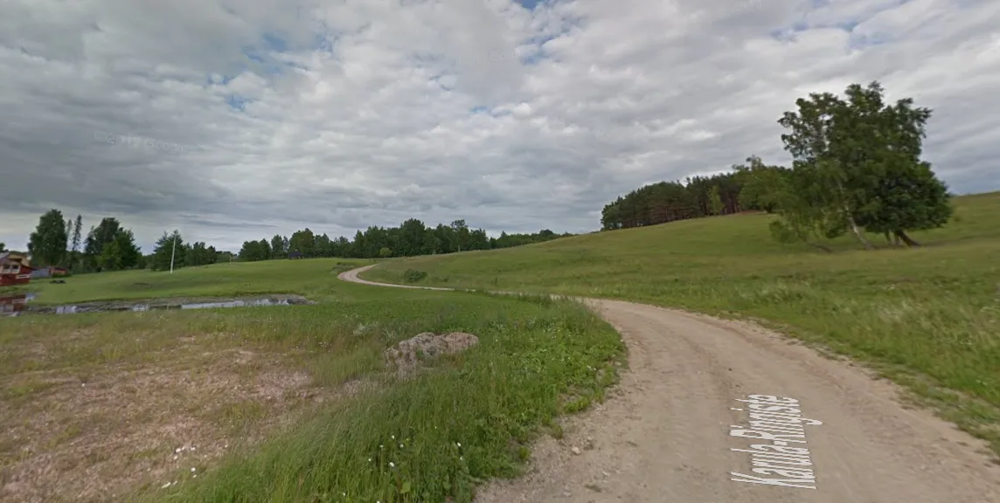
View from 800m in the stage
Onboard of the reverse of the stage from 2010:
End of Leg 2
Total Leg Distance: 113.6 km
Sunday, Start of Leg 3
SS15/17 - Otepää - 11.2 km
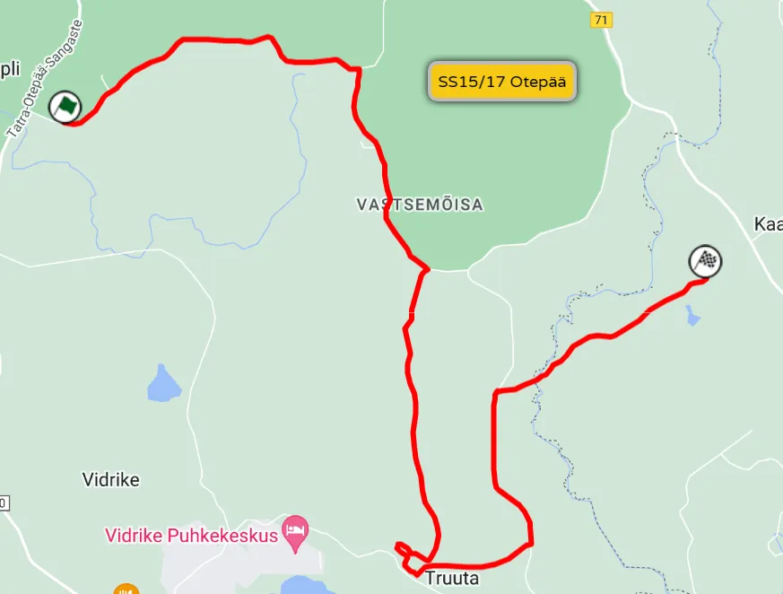
For Sunday, I’ve picked 2 stages that don’t need any introduction if you’ve watched Rally Estonia before. The first of them, Otepää, was a big part of the Saturday stages, with its massive Truuta spectator area and flatout roads.
Like any classic Rally Estonia stage, the stage has wide gravel roads, break-neck speeds and jumps. The stage narrows a tad from the junction at 2.5km, but of course maintains its speed. Four kilometres later, we reach the aforementioned Truuta spectator area. From there, a smaller road takes us onto a wider road from which we turn onto the very narrow forest section. A 90 left completes the stage.
Onboard of the stage from this year’s Rally Estonia:
SS16/18 - Kambja - 18.5 km
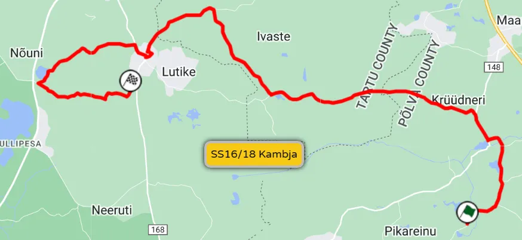
For the powerstage, I have picked this year’s powerstage from Rally Estonia. The tri-county stage takes us on classic Estonian roads that have been in use in rallying for more than 2 decades. The first 2,5 kilometres are of course held on gravel, but after that there is a small flat-out stretch of tarmac. We return to gravel for the rest of the stage, going on nice wide roads and some more technical sections. We finish at the amazing Leigo lake spectator zone, with its massive amounts of spectators to put an end to this rally.
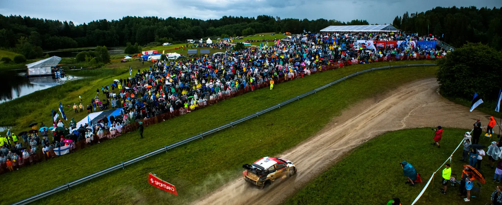
Leigo spectator zone (Jaanus Ree // Red Bull Content Pool)
End of Leg 3
Total Leg Distance: 59.4 km
Total Rally Distance: 289.2 km
Full map of the rally on MapFab: https://www.mapfab.com/map/Ad1u/Rally-Baltics


Comments